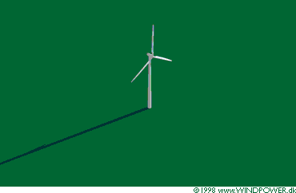

Shadow Casting
from Wind Turbines

Wind turbines, like other tall structures will cast a shadow on the neighbouring
area when the sun is visible. If you live very close to the wind turbine,
it may be annoying if the rotor blades chop the sunlight, causing a flickering
(blinking) effect while the rotor is in motion.
 A bit of careful planning, and the use of good software to plan your
wind turbine site can help you resolve this problem, however. If you know
where the potential flicker effect is of a certain size, you may be able
to place the turbines to avoid any major inconvenience for the neighbours.
A bit of careful planning, and the use of good software to plan your
wind turbine site can help you resolve this problem, however. If you know
where the potential flicker effect is of a certain size, you may be able
to place the turbines to avoid any major inconvenience for the neighbours.
Few
Rules
Shadow casting is generally not regulated explicitly by planning authorities.
In Germany, however, there has been a court case in which the judge tolerated
30 hours of actual shadow flicker per year at a certain neighbour's property.
In the 30 hours, it appears, one should only include flicker which occur
during the hours where the property is actually used by people (who are
awake).
Predicting
Shadow Flicker
Fortunately, we are able to predict quite accurately the probability of
when and for how long there may be a flicker effect. We may not know in
advance whether there is wind, or what the wind direction is, but using
astronomy and trigonometry we can compute either a likely, or a "worst
case" scenario, i.e. a situation where there is always sunshine, when
the wind is blowing all the time, and when the wind and the turbine rotor
keep tracking the sun by yawing the turbine exactly as the sun moves.
 Figuring out the exact shape, place, and time of the shadow from a wind
turbine requires a lot of computation, but at least one professional wind
software programme can do this very accurately, even in hilly terrain, and
with house windows of any size, shape, location and inclination facing in
any direction. (See the Links page for
the address of wind software companies).
Figuring out the exact shape, place, and time of the shadow from a wind
turbine requires a lot of computation, but at least one professional wind
software programme can do this very accurately, even in hilly terrain, and
with house windows of any size, shape, location and inclination facing in
any direction. (See the Links page for
the address of wind software companies).
Do
it Yourself
On one of the following pages we have included another shadow calculator,
which will give you a possibility of computing a shadow map of your particular
area in flat terrain. The calculator gives you a lot of options to produce
realistic estimates of actual shadow casting. Fortunately, you will discover
that shadow casting problems are generally restricted to a few areas close
to the turbine.
 Since the calculation of shadow casting requires lots of computer power,
we have included a number of important general results on the following
pages.
Since the calculation of shadow casting requires lots of computer power,
we have included a number of important general results on the following
pages.

|
Back | Home
| Forward |
© Copyright 1998 Soren Krohn. All rights reserved.
Updated 27 September 2000
http://www.windpower.org/tour/env/shadow/index.htm